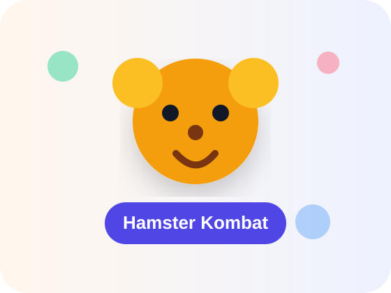

راهنمای همستر کمبت

آموزش سریع و کاربردی همستر کمبت
راهنمای فارسی برای شروع، کارتها، ارتقاها، ماموریتها و نکات بازی تلگرامی همستر کمبت.
🚀
شروع آموزش
ℹ️
درباره ما
📱
سایر برنامههای ما
⭐
ثبت نظر در مارکت